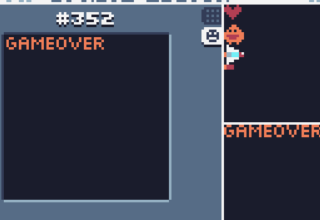

优化
目前，玩家是可以躲到屏幕外面的。
现在新建一个函数来解决这个问bug：
function stay_on_screen(v)
if v.x<=0 then
v.x=0
end
if v.y<=0 then
v.y=0
end
if v.x>=239-v.w then
v.x=239-v.w
end
if v.y>135-v.h then
v.y=135-v.h
end
end
在update中加入这个函数：
if v.r=="p" then
stay_on_screen(v)
end
同样，如果是敌人超出了屏幕的左边界，则让它死掉，以防止卡顿：
if v.r=="e" and v.x<=-1*v.w then
v.die=true
end
如果子弹超出了右边屏幕，则让子弹死掉：
if v.r=="b" and v.x>239 then
v.die=true
end
这样，可以有效减少卡顿。
对于gameover，打出来的字太简陋了，所以还是用绘制的方式：

draw_gameover变为：
function draw_gameover()
spr(352,20,20,0,2,0,0,22)
end